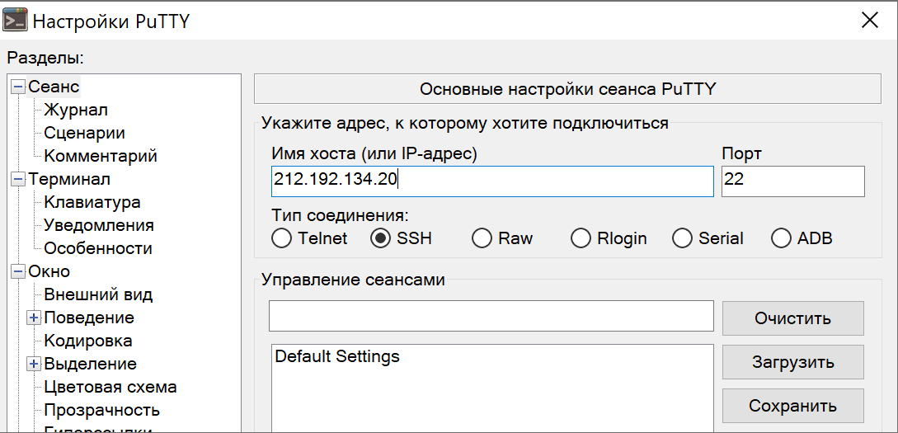
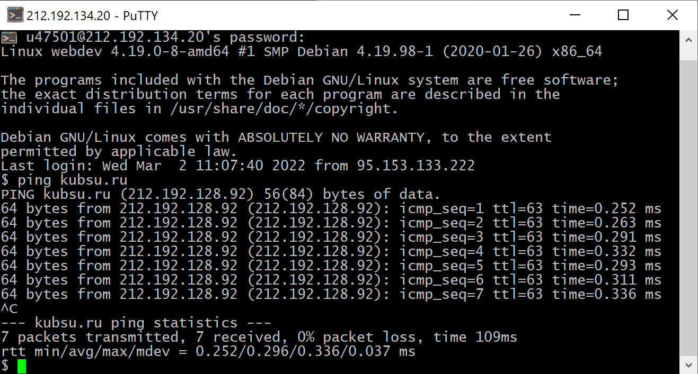
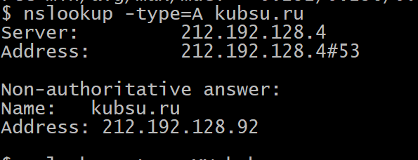
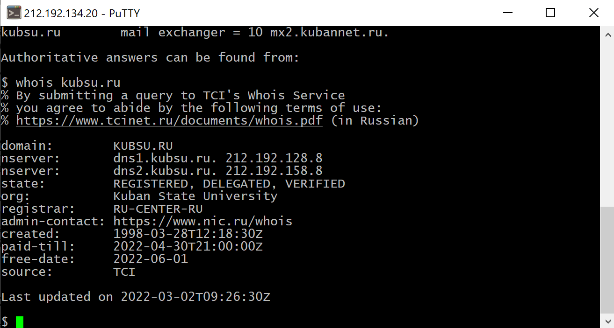
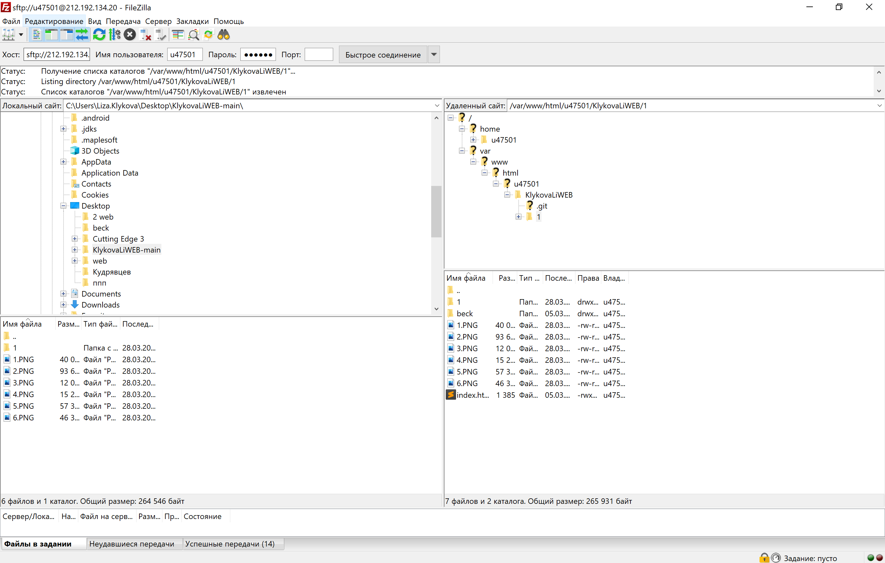

FireZilla
sftp

PuTTY
login and password and ping
команда ping нужна для проверки целостности и качества соединений
nslookup
nslookup - инструмент для запросов в DNS для получения IP,
a - IP адрес устройства.
mx - почтовый обменник. mail exchanger - запись, отвечающая за сервер, через который будет работать почта.чем меньше число после "=" тем выше приорите
whois
получает данные о сайте или сервере (дата создания, контакты админ, domain)
git clone
FireZilla
sftp